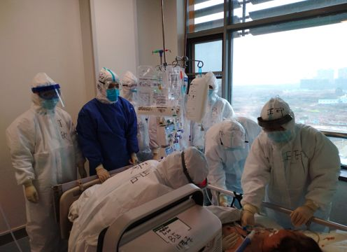
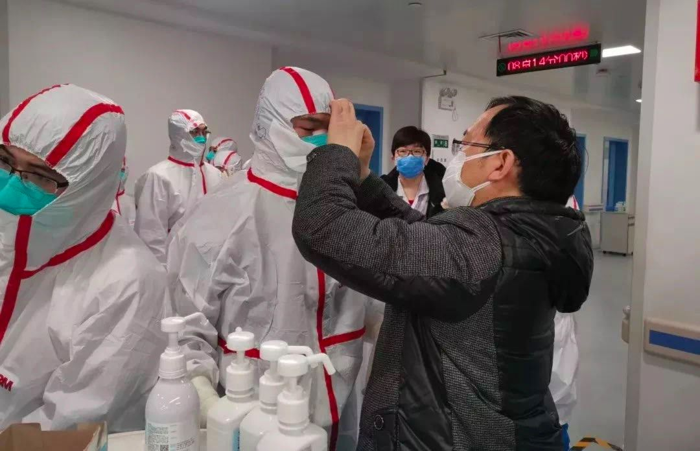
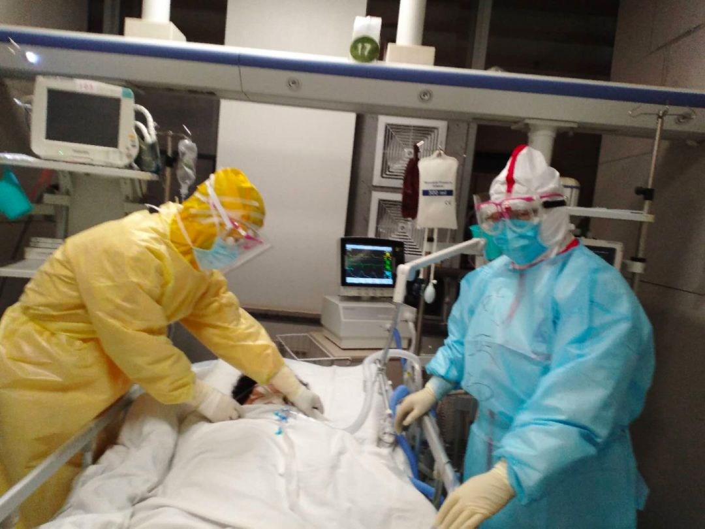

专访金银潭医院上海医疗队周新：“新冠肺炎”重症患者救治难度比SARS和禽流感大
原文链接 备份链接 _ _ _ _ 很多病人病情发展出乎意料，周新表示，虽然救治压力很大，但上海医疗队会继续坚持，力争降低病死率。 _ _ _ _ 记者 | 周 洁 除夕夜，66岁的上海市第一人民医院呼吸与危重症医学科学科带头人周新教授， …

口述实录·火线

记者 | 黄 祺
天上飘着武汉冬季常见的冰冷细雨，湿冷的空气可以从袖口、领口任何漏风的位置渗到人的皮肤，带走体温。这一天是大年初二，最高气温3度。春节前积压未诊断的新冠肺炎病人，其中一部分已经转为重症，武汉急需医护人员救治病人。
头天晚上抵达武汉的北京援鄂医疗队队员们，要适应的不仅仅是没有暖气的武汉寒冬，还有等待着他们的一场苦战——这支医疗队一百多人，要在刚刚征用为新冠肺炎定点收治医院的同济医院中法新城院区开辟“战场”，收治望眼欲穿的武汉新冠肺炎患者。

年初一从北京出发的北京协和医院医疗队
医疗队由北京协和医院等6家委属委管医院组成，共一百多人。北京协和医院第一批援鄂21名医护人员中有感染专业、重症医学专业、呼吸科的专家，而队长刘正印则是协和医院感染科主任医师——一名参与过17年前非典病人救治的“老兵”。
网友们把北京协和医院等国内著名医院派出的医疗队，称为国家级医疗“天团”，民众和患者对这些国家级的专家们充满期待，而他们也不负期待，承担了大量危重病人的救治重任。
从年初二到达武汉至今，刘正印教授已经在最艰苦的危重症患者救治一线坚守一个多月，刘正印教授和同事们不断总结和调整治疗方案，力争提高危重症患者治愈率。

刘正印教授在同济医院中法新城院区ICU病房
2月25日下午，《新民周刊》对刘正印教授进行了专访，他表示，总结一个多月来危重症治疗经验发现，不能简单地将新冠肺炎看做“肺炎”，因为这种病毒对患者其他器官的伤害，常常成为病人致死的主要原因。如果单纯将疾病看做“肺炎”，可能会低估疾病的严重程度。
病毒侵袭多器官造成难治

北京协和医院医疗队救治新冠肺炎患者
《新民周刊》：您到武汉已经一个月，北京协和医院医疗队管理的都是危重症患者，目前我们对新冠肺炎有哪些新的认识？
刘正印：新冠肺炎是个新的疾病，大家对它的认识还处于一个初步的阶段。
这个病可能还有很多的机制我们认识不清楚，但有一点我觉得非常重要：我认为不要把新冠肺炎看做一个肺炎，它是一个病，病毒不但侵犯肺，它还侵犯血管的内皮细胞，导致凝血功能的一些改变。它侵犯肾脏，肾功能出现异常的特别多。同时它还侵犯心脏。所以它是一个病，不应该单纯叫它“肺炎”。
把它看成一个病以后，治疗的时候就要做综合的判断，要比治疗肺炎想得更全面、更深入。
第一，危重病人的治疗中综合性治疗很重要，综合性治疗包括吸氧、加强营养、纠正电解质等。
第二，我们看到很多病人出现处凝血化验异常，最后出现DIC（即弥散性血管内凝血，主要临床表现为出血、休克、器官功能障碍和溶血性贫血）的一些问题。所以，对上呼吸机这些病人，要长期的卧床，我们要用低分子肝素这类药物预防血栓的形成。我看到有的病人，脚趾出现坏疽现象，这就是凝血功能的问题。
我们感到，如果判断病人可能由重症转化为危重症，那么就早点用上呼吸机，有可能救回来。
《新民周刊》：最近湖北以外确诊患者病例数不断下降，全国各地支援湖北的医疗队还在增加，ICU病房压力有所缓解吗？
刘正印：ICU病房的救治压力没有缓解的迹象。疫情发生一个多月，武汉还有很多病人，轻症病人可能陆续康复出院了，但还是会有一些病人转成了重症，所以说危重症患者的救治，在武汉还是一个很大的问题。
《新民周刊》：最早到武汉的医护人员，已经辛苦工作了很长时间，大家状态怎样？会不会换岗？
刘正印：我们来武汉的很多护士都比较年轻，有的孩子很小，你说能不想家吗？这是人之常情，一点不奇怪。但目前换岗不太现实，我们尽可能让大家轮流休息一下。我作为队长多去关心他们，协和医院的大后方在关心慰问家属方面做了许多工作，让我们解除后顾之忧。
目前护士是4小时一班，医生一般12个小时轮一次，医生分AB两组， A组在病房里的时候B组医生在病房外面协助，这样大家轮一下。隔离服穿太久是不安全的，我们尽量合理安排。
初到武汉，心中非常难过
《新民周刊》：年初二您和同事们来到武汉时，是一个什么样的场景？
刘正印：我们来的时候，同济医院中法新城院区刚刚腾空，还没有改造好，都是普通病房。像雷神山、火神山这样的新医院，可以按照传染病要求建，但是普通病房改建，肯定不能那么精细，只是在原来的基础上改建，基本符合隔离病房标准就行了。外面有很多病人等着住院，非常急。我们医生也参与了病房改造的设计，没有条件也要上，必须改造出来。差不多用了24小时，病房改造一完成，年初四就开始收病人。
北京派出的这个医疗队是6家医院组成的，大家一起合作开始收治病人。一开始接手的50张病床，很快就住满了，指挥部把一批又一批病人送来，有的病情轻一些，有的比较重，危重患者的大概占三分之一。那时候也来不及做区分，先收进来住院是最急迫的需求。

刘正印教授帮助同事穿防护服
《新民周刊》：那个时候，硬件条件、物资保障，都非常艰苦是吗？
刘正印：是的，当时条件特别艰苦。重症患者需要上呼吸机，但上呼吸机对病房条件是有要求的，比如说没有支气管插管需要的正压头罩，病房内氧气管道的压力不足，呼吸机接口不配合等等，这些都是当时的条件，“三个臭皮匠，顶个诸葛亮”，大家集中智慧一起想办法就能解决问题。病房晚上特别冷，我们北方人非常不习惯。
来武汉之前，北京协和医院赵玉沛院长等院领导就给我们提出，医护人员一定要在保护好自己的情况下才能更好地救治病人。如果你自己都保护不好，把自己给感染了，你就谈不上来救治病人，还给当地添了麻烦。作为队长压力巨大，所以我们对每个进入病房的队员必须经督导员检查合格在衣服上打上√，才能进入病房；而出病房必须2个人配合、互相监督，按标准程序脱防护设备。
我是队长，我们来的都是业务骨干，当时是压力挺大。不过我经过2003年的SARS的锻炼，有一些经验，可以给大家一些指导。年轻的医护人员过来时一腔热血，但现实很“骨感”，真的要进病房还是会有恐惧感的，就要鼓励大家，从思想上来战胜恐惧。
《新民周刊》：到武汉没几天，北京协和医院医疗队又去开辟一个新的病区是吗？
刘正印：到武汉一周以后，我们接到任务，要开辟一个新的ICU病房，从筹建、设计到完工，用了两天时间。2月4日，由北京协和医院牵头，联合北京医院、武汉同济医院、江苏省医疗队共同建设的联合ICU就正式启用了。
这是武汉同济医院中法新城院区救治危重症患者的主战场，几乎所有病人都是要上呼吸机的危重病人。2月4日下午5点，我们就收治了第一位患者。
三天后，2月7日，北京协和医院第二批142名医护人员增援武汉，至此我们北京协和医院两支医疗队整建制全面独立接管联合ICU。
《新民周刊》：ICU病房当天就收治了大量病人吗？
刘正印：是的。ICU病房运转第一天，18个病人中14个病人给气管插管有创呼吸机辅助呼吸。当时收治病人秩序比较混乱，我也接到很多求助的电话，希望将病人送到我们这里来，但我很无奈，告诉他们，谁能送到病房来不是我们医生说了算的。那段时间心里常常感到很难过。
那时候有很多的无奈。比如有的病人需要血液透析，有的要上ECMO， 但设备还没有，有的病人看着好好的，突然就说不行了，又没有有效的办法抢救，非常难受。而且这个病发展很快，也许有条件也救不过来。
所以后来我们强调要尽早发现病人，判断哪些轻症病人会变成重症、危重症，这个节点很难判断，但很重要。不能及时发现这种会转成重症的病人，会耽误很多的治疗的机会。
北京协和医院第二批的同事2月7日晚上六七点到武汉，吃了饭就进病房开始工作。病人最多的时候，32个病人中26人上有创呼吸机，你想想这是多大的工作量？
到目前为止，新冠肺炎危重患者的治愈率还是不高，从各家重症监护室的情况看，凡是上呼吸机、气管插管的病人，愈后都不好，气管插管的病人死亡率基本上都在40%以上。危重病人的高死亡率，对于ICU的医生护士来说压力是最大的，危险性也大。

刘正印教授与北京协和医院感染科主任李太生教授进入病房前
《新民周刊》：来了一个多月，现在ICU病房运转的情况怎样？
刘正印：现在我们医疗队专业非常全，覆盖ICU、内科ICU、呼吸与危重症医学科、感染科、心内科、消化内科等多个科室。现在我们的病房里治疗流程都已经规范化了，医护人员对这个工作强度也逐渐适应，我们必须做到忙而不乱，最怕的是又忙又乱又干不出来，这是最麻烦的。
必须从传染病疫情中吸取教训
《新民周刊》：您经历过非典，再参加新冠肺炎的一线驰援，是不是有很多感慨？
刘正印：2003年非典疫情中，北京协和医院在急诊建临时SARS病房，曾经收治40多名患者，我是第一批进非典病房的医生。当时大家都知道广东很多医护人员感染、还有死亡的，大家都很恐惧。有过上一次的经历，这次参加新冠肺炎救治，我没有年轻人们那么恐惧，他们没有经历过，一开始还是紧张的。
17年后我们国家再次出现这样的传染病疫情，我的一个感慨就是“好了伤疤忘了痛”。你想一想，非典疫情后，我们建立起了疾控预防体系，还是比较完整的。
但是过了17年之后传染病突然出现，而且新冠肺炎病毒的传染性比SARS强多了，非典时哪里看到过这种无症状的潜伏病人传染人？这是很可怕的。所以说没有吸取SARS的教训，更早地做出疫情判断，导致目前的结果，这个是很让人痛心的一个事情。
如果当初出现医护人员感染的时候，就马上重视起来，该怎么办怎么办，不会达到现在这样的程度。

刘正印教授17年前曾是北京协和医院非典病房首批医生
《新民周刊》：疫情发生，我们发现专业的医疗力量还是不多的，这一点未来应该怎么补短板？
刘正印：我是感染病专业的医生，传染病是感染性疾病范畴中的一类疾病。经典的传染病像肝炎等等，我们国家通过多年的防治，新发患者人数已经大幅度下降，这些年，新发的传染病越来越多。
你想想从2003年的SARS，到MERS（中东呼吸综合征），到禽流感、埃博拉，再到现在的新冠肺炎，一个接一个的公共卫生事件出现。当传染病疫情发生的时候，就必须依靠感染科的医生，从治疗上、预防上来做更多的工作。
我感到国家在这方面的投入还是不够的，如果国家不投入更多的话，将来一旦出现这种突发的传染病事件，还是会手忙脚乱，我们平常的这种准备还是不充足。无论是物资还是人才队伍，平常可能用不到，但一定要准备好，备而不用是没问题的，就怕需要的时候没有准备，那就麻烦了。
这次新冠肺炎的救治中也暴露出一些问题，以后我们感染病学科需要大力发展，以应对各种各样的传染性疾病。

征集令
《新民周刊》现面向全国征集新冠肺炎采访对象和真实故事：
如果你是参与抗击新冠肺炎疫情的医护人员或其家属，我们希望聆听你的“战疫”故事，也希望传达你的诉求。
如果你是确诊、疑似患者本人或家属，我们希望了解你和家人如何“抗疫”的过程，让外界了解你的真实经历。
如果你是疫情严重地区的普通市民，我们希望展现你的乐观，并倾听你所需的帮助。
如果你是公共服务人员或各类捐助者，我们希望看到你的“最美逆行”，记录下你的无私。
……
抗击新冠肺炎疫情，我们诚征对疫情了解的社会各界人士，提供相关线索，说出你的故事，让我们用新闻留存这一切。
《新民周刊》新冠肺炎线索征集值班编辑联系方式（添加时请简要自我介绍）：
周一：应 琛 微信号：paulineying0127
周二：金 姬 微信号：gepetta
周三：黄 祺 微信号：shewen-2020
周四：周 洁 微信号：asyouasyou
周五：孔冰欣 微信号：kbx875055141
周六：吴 雪 微信号：shyshine1105
周日：姜浩峰 微信号：jianggeladandong
✳如你需要捐赠物资，可与以下两位工作人员联系:王勇：WangYong-SH 吴轶君：rommy150708（添加时请注明“捐物资”，方便工作人员快速通过您的申请，谢谢。）
新闻是历史的底稿，你们是历史的见证者。期待你的故事、你的线索！

▼
大家还都在看这些
▼
新民周刊所有平台稿件， 未经正式授权
一律不得转载、出版、改编或进行
与新民周刊版权相关的其他行为，违者必究


原文链接 备份链接 _ _ _ _ 很多病人病情发展出乎意料，周新表示，虽然救治压力很大，但上海医疗队会继续坚持，力争降低病死率。 _ _ _ _ 记者 | 周 洁 除夕夜，66岁的上海市第一人民医院呼吸与危重症医学科学科带头人周新教授， …
原文链接 备份链接 后来我回想，也挺后怕的。我接诊阿姨的时候，给她查体，她对着我咳嗽过。 口述 | 宋亚锋 整理 | 黄 祺 “突然听到一个消息，心情很不好，内心很恐惧，虽然根本不认识，但感觉很难过，一路走好，希望你的家人能够渡过难 …
原文链接 备份链接 编者按：上海市第一人民医院呼吸科的谢国钢医生，2月1日报名了支援上海公共卫生临床中心医疗队。清晨5点，值班的他接到了报到的电话通知，连家都来不及回，就匆匆奔赴了“战场”。要知道，谢国钢医生12月份才刚刚结束为期半年的援 …
原文链接 备份链接 “彭主任，急诊室一个31岁的新冠肺炎病人心脏骤停了，您快来看看，要不要转入ICU。” 2月4日晚上7点半，武汉大学中南医院重症医学科（ICU）主任彭志勇刚从湖北天门考察疫情回到办公室，和财新记者聊了不到十分钟，就 …
原文链接 备份链接 陈德昌说，金银潭医院的重症病人情况比较严重。在他工作的病房里，29个病人有16个都上了呼吸机，同时面临物资短缺的难题。当他们作为上海医疗队进驻时，原有医护人员已连续工作近一个月了。这次出征，比想象中要艰苦。 57岁的陈 …